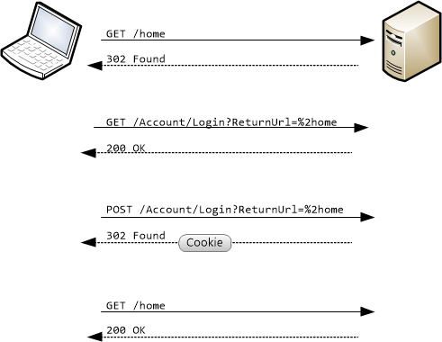
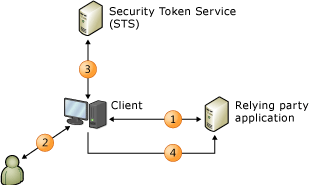

Authentication
Authentication is the process of determining whether someone or something is, in fact, who or what it is declared to be.
Authentication Methods
- Basic Authentication
- Digest Authentication
- Integrated Windows Authentication
- Forms-based Authentication
- Client Certificate Authentication
- Claims-based Authentication
- Multi-factor Authentication
Basic Authentication

Pros and Cons
| Pros | Cons |
|---|---|
| Internet standard | Plain text credentials |
| Simple protocol | Sent with every request |
| Widely supported |
Hands-on exercises
Follow Basic authentication section from Web Security Examples
Digest Authentication
Integrated Windows Authentication
Forms-base Authentication
Pros and Cons
| Pros | Cons |
|---|---|
| Easy to implement | Non-Standard |
| End-user friendly | Requires browser |
| CSRF vulnerable |
Hands-on exercises
Follow Forms authentication section from Web Security Examples
Client Certificate Authentication
Claims-based Authentication
Concepts
| Claim | A piece of identity information |
| Security Token | A serialized set fo claims that digital signed by issuing authority |
| Identity Provider (IdP) | Provides identifiers for users looking to interact with a system |
| Relying Party (RP) | Claims aware application |
| Security Token Service (STS) | A service that builds, signs and issues security tokens |
Hands-on exercises
Follow Claims-based authentication section from Web Security Examples